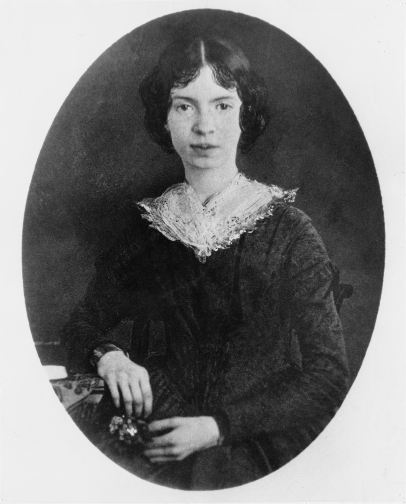

Emily Dickinson was an early American poet. She lived from 1830-1886 and is most notable for her dark and observational poems. Dickinson was born and lived in Amherst, Massachusetts and stayed there the rest of her life, possibly as a recluse. She wrote almost 1,800 poems in hand made books. Dickinson's family published the works after her death in 1886.
